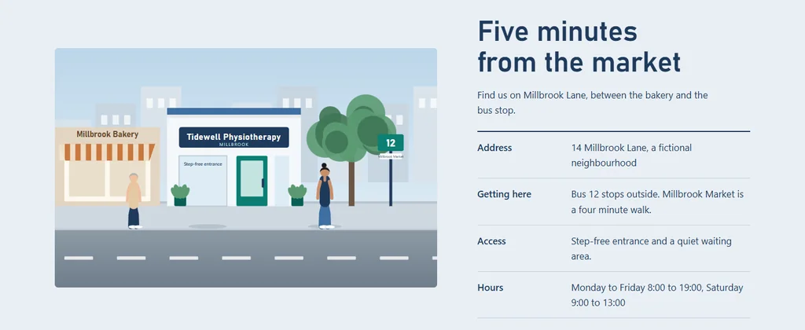

ESTUDIO DIGITAL PARA NEGOCIOS QUE QUIEREN CRECER
Te llevamos hasta tus clientes.
Web, vídeo y anuncios que trabajan juntos para acercar tu negocio a las personas adecuadas. Un solo equipo, una estrategia clara.
Prototipo M3 aislado · solo prueba de comportamiento · los enlaces apuntan a rutas de la app que aquí no se sirven · EN ES DE
ESTUDIO DIGITAL PARA NEGOCIOS QUE QUIEREN CRECER
Web, vídeo y anuncios que trabajan juntos para acercar tu negocio a las personas adecuadas. Un solo equipo, una estrategia clara.

01
Una presencia digital clara, rápida y cuidada, preparada para convertir visitas en consultas.
Diseñamos y cuidamos tu web para que explique con claridad lo que haces y facilite que alguien te escriba o te llame.

02
Ayudamos a que tu negocio aparezca cuando alguien busca lo que ofreces cerca de ti.
Trabajamos tu presencia en búsquedas y mapas para cualquier mercado donde tengas clientes, no solo en una región concreta.

04
Campañas en Google y Meta conectadas con objetivos y resultados que puedas entender.
Las campañas llevan a páginas pensadas para ellas y se miden en un panel de resultados claro.